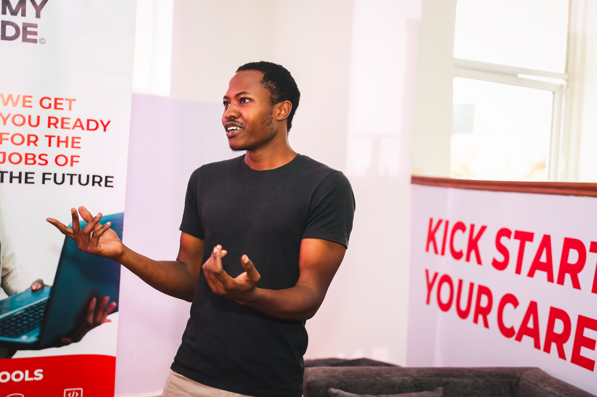

Computer Science student focused on data, machine learning, computer vision, and embedded systems. Interested in building intelligent systems that connect software, data, and physical-world systems to solve practical problems. Hands-on experience spans Python, machine learning, data processing, and API development, with a growing focus on applied AI, remote sensing, and system integration.

A farm monitoring and automation system integrating farm, sensor, and remote-sensing data. Current work focuses on literature review and system planning, including data requirements, decision-support workflows, and potential automation capabilities for practical farm management.
ucotieno@gmail.com
+254 798 380 239
Nairobi, Kenya
English (Fluent), Swahili (Native), Japanese (Beginner)